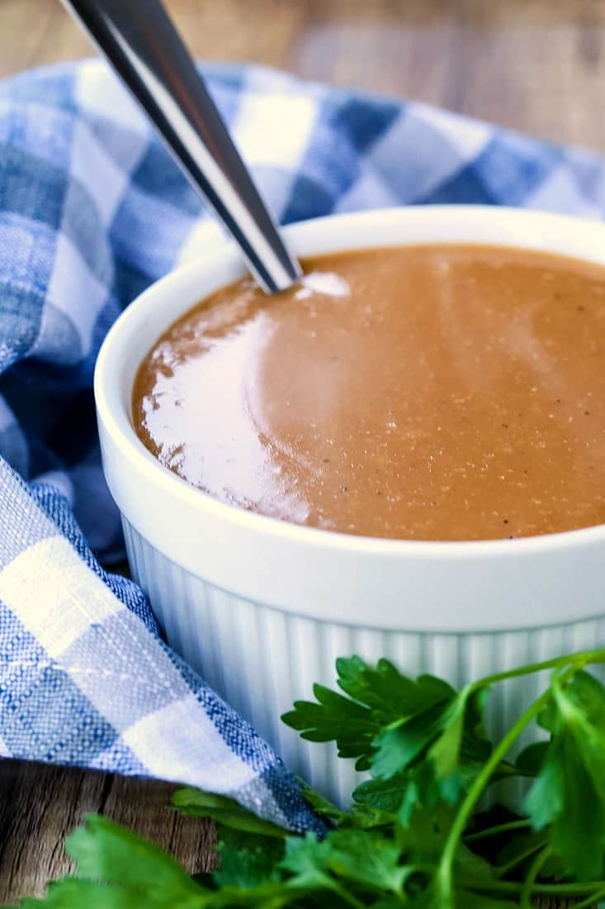

Brown Gravy

Description
This is a simple, yet delicious, brown gravy that can be used for a multitude of dishes. A favorite use in our household is to put the gravy over the top of meatloaf.
You can also use this gravy over the top of chicken, turkey, mashed potatoes, and so much more! It's hard to go wrong with a good brown gravy.
Ingredients
- 3 cups beef stock or broth
- 1 tsp garlic powder
- 1 tsp Worcestershire sauce
- 1 1/2 tsp beef base (such as Better than Bouillon)
- salt and pepper to taste
- 1/4 cup water mixed with 3 tbs cornstarch
- Splash of heavy cream (optional)
Steps
- Add all the ingredients except the cornstarch and water mixture to a pot. Whisk together and bring to a boil.
- Pour in the cornstarch mixture while whisking to prevent any lumps.
- Bring the gravy back to a boil, then turn down to a simmer and cook for 3-4 minutes.
- Add in the cream if using, then serve.